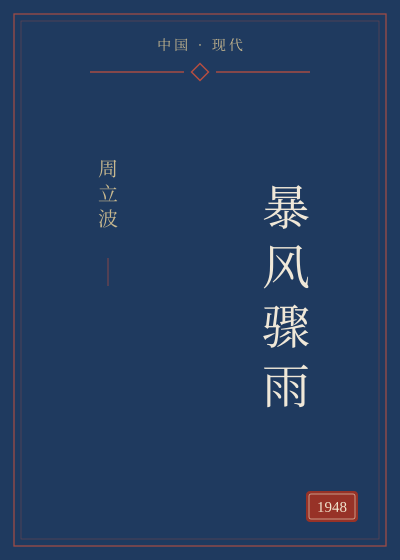
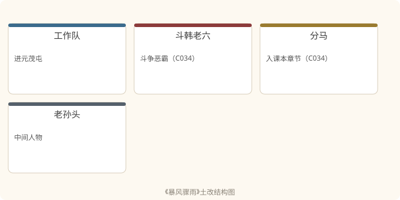

暴风骤雨
一、基本信息
| 作者 | 周立波 |
|---|---|
| 成书/出版 | 1948年由东北书店出版（人民日报海外版 C034）；1951年获得斯大林文学奖金（C034） 中国农村土地改革的'百科全书'——周立波《暴风骤雨》（人民日报海外版）（官方媒体） |
| 国别/地区 | 中国 |
| 时代 | 现当代 · 现代 |
| 体裁 | 长篇小说 |
| 语言 | 汉语（白话·东北方言） |

《暴风骤雨》土改结构图（主题·结构图）
二、创作背景
人民日报海外版（C034）：周立波1946年10月'受中共珠河（尚志）县委的委派到元宝区任区委书记，参加当地的土地改革运动'；小说'以1946年至1947年间东北土地改革为背景，叙述了土改工作队开进松花江畔的元茂屯，发动和组织广大贫苦农民斗争恶霸地主韩老六'。
评价（C034）：日本学者安岛彬称其为描写中国农村土地改革的'百科全书'式的作品。
与丁玲《太阳照在桑干河上》同为土改叙事（对照）。
三、内容脉络
工作队进元茂屯：发动贫苦农民、斗争韩老六（C034）。
赵玉林、郭全海——'深受压迫的贫苦农民，勤劳勇敢、无私无畏'（C034）；老孙头——'狡黠、落后、自私、胆小'（C034）。
下卷'分马'被编入中学语文课本（C034）。
四、主要人物表
| 人物 | 身份 | 说明 |
|---|---|---|
| 郭全海 | 农会主任 | 贫苦农民（C034） |
| 赵玉林 | 积极分子 | （C034） |
| 韩老六 | 恶霸地主 | 被斗争对象（C034） |
| 老孙头 | 赶车的 | 中间人物（C034） |
五、主题与艺术特点
- 土改的'暴风骤雨'：发动与斗争（C034）。
- 中间人物与积极人物的两级描写（C034）。
- 解放区文学的范本（C034：文代会表彰）。
六、影响与评论
- 人民日报海外版：1951年获斯大林文学奖金；'分马'入课本（C034）。
中国农村土地改革的'百科全书'——周立波《暴风骤雨》（人民日报海外版）（官方媒体） - 人民日报海外版：安岛彬'百科全书'式评价（C034）。
中国农村土地改革的'百科全书'——周立波《暴风骤雨》（人民日报海外版）（官方媒体）
七、阅读建议
难点
- 土改史语境（对照《桑干河上》）。
- 东北方言。
- 《暴风骤雨》（人民文学出版社，通说待核）。
与《太阳照在桑干河上》对读：同年土改叙事的两极。
八、待核实
- 上下卷出版时间（1948/1949说）核对。
- 韩老六原型事件待核。
- 郭全海与刘桂兰情节核对。
本页主要来源
周立波的其他收录作品：暴风骤雨